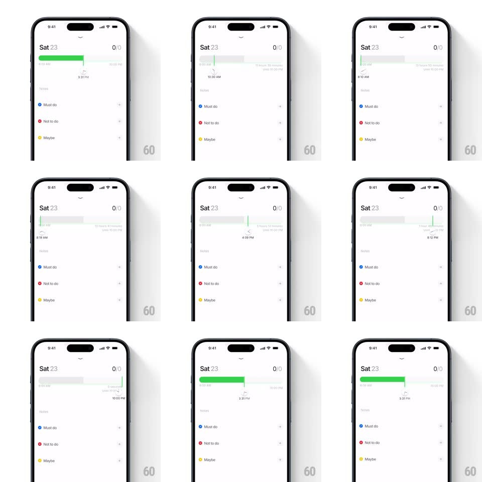

Media
Frame-by-frame

Rebuild this interaction 1:1: Persist's day timer slider - scrubbing the day's timeline slider reveals a floating clock indicator above the thumb: a little clock face whose hands spin to the selected time, with dynamic time and duration text updating live.

Rebuild this interaction 1:1: Persist's day timer slider - scrubbing the day's timeline slider reveals a floating clock indicator above the thumb: a little clock face whose hands spin to the selected time, with dynamic time and duration text updating live.
## Integration
Integration: stack-agnostic spec - springs given as stiffness/damping, timed motions as duration + curve; map every value to your framework and animation library of choice.
## Scene
Persist's white day page: "Sat 23" header, 0/0 counter, a horizontal timeline slider under the header (green fill from the day's start, hour labels like 4:00 AM and 10:00 PM), and the task list below (Must do, Not to do, Maybe).
## Motion spec
Pattern: scrubbable timeline with floating clock callout.
- Touch down on the slider: a floating indicator pops in above the thumb (scale 0.6 -> 1, spring ~500/25, 200ms) - a small clock face with the time beneath it.
- Drag: the thumb tracks the finger 1:1 along the track; the green fill extends/retracts with it instantly.
- While scrubbing, the clock's hands spin to match the position (hands rotate continuously with drag, shortest-path interpolation between times) and the time text updates every frame (8:02 AM, 1:00 PM, 3:31 PM...), along with the duration line ("11 hours 31 minutes (till 10:00 PM)").
- Release: the indicator settles with a small bounce, the hands ease to the exact minute (150ms ease-out), then the whole indicator fades/floats away after ~800ms idle (translateY -6px, opacity -> 0, 200ms).
- The thumb scales 1.0 -> 1.2 while held.
## Calibration
- Hand rotation speed is tied to drag velocity - fast scrubs spin the hands fast, then they catch up and settle.
- The indicator never overlaps the header - it flips below the thumb near the top edge.
## Reduced motion
Indicator appears statically; hands snap to position.
## Don't miss
- The clock face is a real analog mini-clock - two hands, tick ring - not an icon.
- The duration text counts to the day's end anchor (10:00 PM), not just the absolute time.